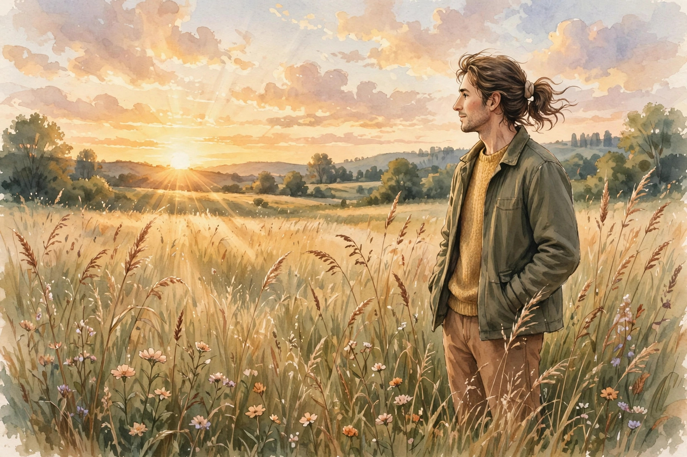

New Year Portrait Prompts: 10 Ideas for 2026
10 free New Year portrait prompts for Gemini and ChatGPT. Use your own photo and make a bright New Year picture.
Seasonal photo prompts for autumn, spring, rain, graduation and New Year.
10 free New Year portrait prompts for Gemini and ChatGPT. Use your own photo and make a bright New Year picture.

10 free spring portrait prompts for Gemini and ChatGPT. Use your own photo and make a fresh spring picture.

10 free graduation portrait prompts for Gemini and ChatGPT. Use your own photo and make a proud graduation picture.

10 free rainy day portrait prompts for Gemini and ChatGPT. Use your own photo and make a soft, calm rainy day picture.

10 free autumn portrait prompts for Gemini and ChatGPT. Use your own photo and make a warm autumn picture with leaves and soft light.

10 free golden hour portrait prompts for Gemini and ChatGPT. Use your own photo and make a warm sunset light portrait.